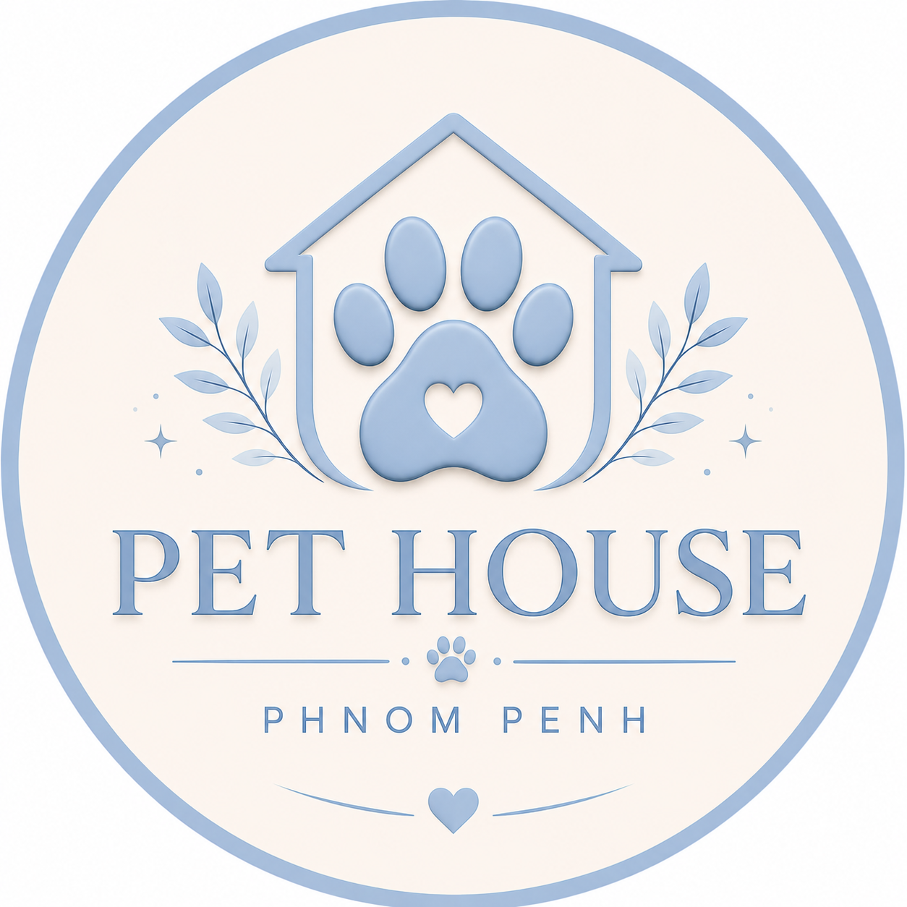

Regular walks and play
Walks, time outdoors and play are arranged around the dog's usual schedule. We also have access to a dog park in our residential building.

Pet HouseHome boarding in Phnom PenhHOME DOG BOARDING • PHNOM PENH
Planning a trip and looking for a safe, comfortable place for your dog? Pet House offers home-based dog boarding in Phnom Penh, Cambodia. Dogs stay in our air-conditioned home rather than in kennels or cages. We keep the number of guests limited so we can pay attention to each dog's personality and daily routine.

Walks, time outdoors and play are arranged around the dog's usual schedule. We also have access to a dog park in our residential building.
Tell us your dog's meal times, preferred food, sleeping habits and what helps them settle. We aim to keep their routines as familiar as possible.
We'll share regular updates so you can see how your dog is doing while you're away.
Puppies, older dogs and nervous or shy pets may need different routines. Tell us what your dog is comfortable with before booking.
Please tell us your dog's age, breed or size, temperament, experience around other animals, vaccination status, parasite protection, diet, any medication and your travel dates. We can discuss a meet-and-greet or trial day before a longer stay. Whether we can accept a booking depends on availability and whether the animals currently in our care are a good match.
If you're based in Phnom Penh, ask about pickup or drop-off options. If you're traveling from another city in Cambodia, contact us in advance to discuss whether transport can be arranged. These options depend on dates and availability.
No. Pet House offers home-based boarding without kennels or cages.
Yes. You're welcome to ask about meeting us and seeing the home in advance.
We aim to keep familiar routines; tell us your instructions before the stay.
Bookings depend on space, your dog's needs and compatibility with animals already staying with us.
Tell us about your pet, your dates and their care needs. We'll confirm availability and price.